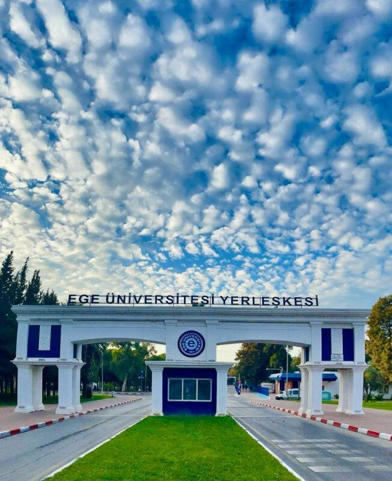

Kökleri neolitik döneme dayanan 8500 yıllık İzmir, dünyanın zengin tarihi güzelliklerine sahip nadir şehirlerinden biri olup, "Smyrna" olan eski adını bir Amazon kraliçesinden almıştır.
16. yüzyıldan itibaren bir liman kenti olarak dünya ve Akdeniz ticaretinde önemli yer edinen İzmir, Türkiye'nin üçüncü büyük ili olup, Ege Bölgesi'nin endüstri, turizm ve kültür merkezidir.
İzmir'de eğitim ve kültürün odak noktasında ise, 1955 yılında kurulan köklü geçmişiyle Ege Üniversitesi yer almaktadır.
Ege Üniversitesi’nin ilk fakülteleri, 1955 yılında kurulan Tıp ve Ziraat Fakülteleridir. Aynı öğretim yılı içinde Yüksek Hemşirelik Okulu açılmıştır.
1982 yılında Ege Üniversitesi’nin ikiye bölünmesi ile Dokuz Eylül Üniversitesi kurulmuş, birçok fakülte ve yüksekokul Dokuz Eylül Üniversitesi’ne devredilmiştir. Ayrıca Ege Üniversitesi’nin çeşitli il ve ilçelerdeki fakülte ve yüksekokulları, Afyon Kocatepe, Pamukkale, Celal Bayar, Adnan Menderes Üniversitelerinin ilk fakülte ve yüksekokullarını oluşturmuştur.
Aşağıdaki tablolardan geçmişten günümüze kadar olan Dekanlarımızı ve Rektörlerimizi öğrenebilirsiniz